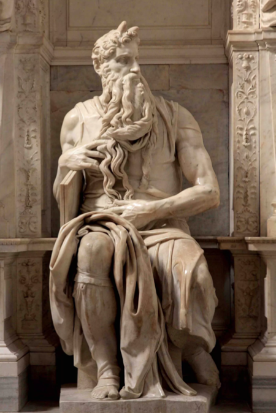

Para encontrar más análisis sobre el arte renacentista, ingresar a:

En Florencia, la escultura fue la primera de las artes en experimentar los nuevos estilos y preocupaciones artísticas que definen el Renacimiento. Los escultores del Renacimiento, como Donatello, Lorenzo Ghiberti y Andrea del Verrocchio, se inspiraron en la antigua escultura griega y romana, pero también exploraron nuevas técnicas y temas. La figura humana, en particular, fue objeto de una gran atención, con los escultores trabajando para capturar la forma y el movimiento del cuerpo humano de manera más realista y naturalista. La escultura también se convirtió en un medio para la expresión de emociones y narrativas complejas, lo que resultó en obras maestras como "David" de Michelangelo y "La Piedad" en la Basílica de San Pedro.
Para encontrar más análisis sobre el arte renacentista, ingresar a: